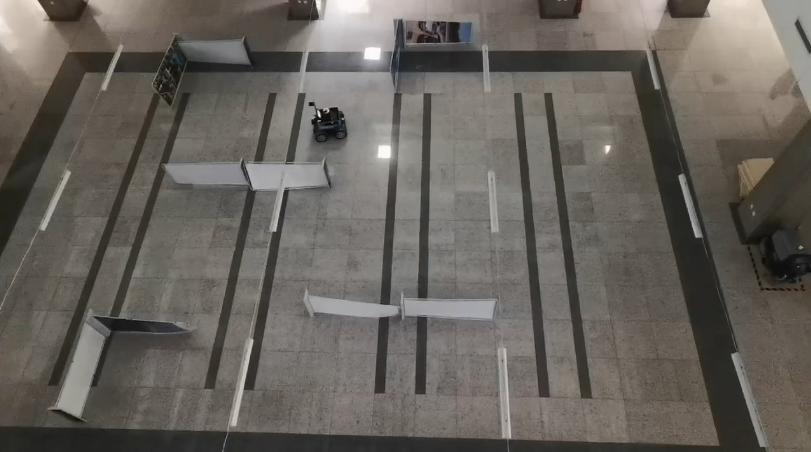

|
Linghao Yang （杨凌昊）
Master candidate
|
Biography
I am currently a second-year Master candidate of College of Information Science and Engineering, Northeastern University. And I received my Bachelor's degree from Northeastern University in 2020.
My research interest includes Computer Vision and Multi-sensor fusion SLAM.
About me: [Github]Projects

|
Stereo Loc
Personal implementation of Multimodal localization: Stereo over LiDAR map JFR2020. A priori LiDAR map-based stereo vision localization system is built on CPU platform. It achieves sub-meter level localization accuracy on KITTI odometry dataset. [Project page] [Video] |

|
multi-object motion estimation
Personal paper . The system fuses the structural information provided by the SLAM process and the semantic information provided by the object detection algorithm to achieve the position estimation of dynamic objects in the scene. The fusion of multi-source information allows the system to reduce the dependence on a high-accuracy 3D object detection network while ensuring the accuracy of object pose estimation. In addition, we design a dynamic object detection method that combines semantic and geometric information to construct object-level static maps for map matching and relocalization while achieving motion perception of dynamic objects. [Project page] [Video] |

|
Mono Loc
Personal implementation of Monocular camera localization in 3d lidar maps IROS2016. A priori LiDAR map-based monocular vision localization system is built on CPU platform. It significantly constrains the scale drift of mono VO, and achieves sub-meter level localization accuracy on KITTI odometry dataset. [Project page] [Video] |

|
Distance Transform Alignment
Personal implementation of distance transform based HD Map Alignment for HD Map based monocular localization. Reference Coarse-to-fine Semantic Localization with HD Map for Autonomous Driving in Structural Scenes IROS2021. Compact 3D Map-Based Monocular Localization Using Semantic Edge Alignment arxiv2021. [Project page] [Video] |

|
Road Map
Personal implementation of Road Marking mapping system. Reference Road-SLAM: Road marking based SLAM with lane-level accuracy IV2017. RoadMap: A Light-Weight Semantic Map for Visual Localization towards Autonomous Driving ICRA2021. [Project page] [Video] |
 Reloc.png)
|
DXSLAM(Mono) Reloc
Personal implementation of monocular relocalization based on the HF-Net visual feature map built by DX-SLAM(personal implementation of mono version). Dxslam: A robust and efficient visual slam system with deep features IROS2020. [Project page] [Video] |
|

|
AGV AMCL
Personal implementation of AMCL-based indoor AGV navigation. [Project page] [Video] |

|
Semantic Mapping.
Simple implementation of semantic LiDAR mapping. [Project page] [Video] |
Awards and Honors
- Jun. 2020: 东北大学校长奖学金.
- Jun. 2020: 东北大学一等学业奖学金.